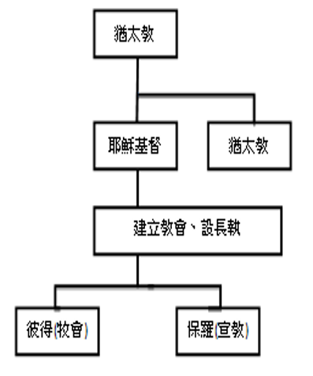
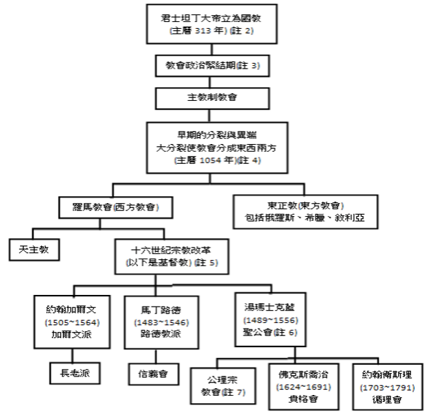
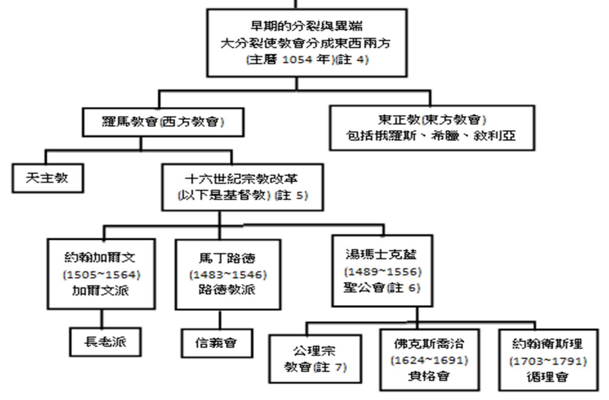

第二課 因信稱義與宗派
除了我們教會之外，還有好多其他的教會，他們也是基督教嗎? 為什麼有這麼多不同的派別? 「因信稱義」跟這個有關係嗎?

說說看，您曾經聽過那些基督教的派別? (天主教、聖公會、長老會、衛理公會、浸信會) 對於有這麼多宗派，你覺得困擾嗎?
不明白為什麼會分那麼多種宗派，說說看，您的疑問是甚麼?
基督教會簡表:教會開始建立之後，教會經歷了極大的逼迫，一直到主後三百年，當時的羅馬皇帝留在病榻上，宣佈不再繼續逼迫教會，准許基督徒聚會，雖然他只是容忍基督信仰，但接下來就進入國教時期(註一)

讓我們先來看個各宗派產生的時間:我們都是由使徒開始的大公教會，到了主後1054年分裂成東西兩方的教會，再到了十六世紀，由馬丁路德對真理的質疑，引起宗教改革，產生了現在的基督教會。


為什麼會有宗教改革，產生基督教會呢? 這一部份我們分三點來說：
壹、基督教會產生的原因
貳、基督教會提出的改革主張為何?
參、宗派的問題
壹、基督教會產生的原因
一、當時教會與政治結合，互相利用、爭權、斂財。
二、當時教會違反聖經真理:
在主基督與我們之間，需加上其他的「中保」，意思是恐怕我們不夠力，上帝不答應我們的祈求，就禱告求別的已死的聖徒幫助，使上帝聽我們的禱告. (例如耶穌的母親馬利亞、使徒彼得或知名的聖徒等……)
認為耶穌基督為我們死之外，我們也得憑自己的行為去賺得救恩。
發行贖罪卷，用金錢去買得赦免。
三、1521年，羅馬天主教會將提出要回復聖經真理的信徒趕出教會，於是馬丁路德及贊同改革的信徒一起聚會，產生了基督教會。
不過，改教運動者如馬丁路德等，並不主張分裂，而是希望教會能夠接納符合聖經的方法，讓信仰回歸真理，因此也叫做復原派教會!
貳、基督教會提出的改革主張為何?
基督教會的主張是否較符合聖經的立場?
讓我們來看宗教改革的三個主張，基督教會主要的主張是三點:
「因信稱義」
「聖經權威」
「信徒皆祭司」
因信稱義
羅馬書三章10節
就如經上所記「沒有義人，連一個也沒有。」
羅馬書三章20節
所以凡有血氣的，沒有一個因行律法能在上帝面前稱義。
羅馬書三章22節
就是上帝的義，因信耶穌基督加給一切相信的人，並沒有分別。
羅馬書三章28節
我們看定了:人稱義是因著信，
不在乎遵行律法。
這幾節經文告訴我們，
我們不是做甚麼來得到神的救恩，
我們所以稱義乃因著信耶穌。
聖經權威
提摩太後書三章16~17節
聖經都是神所默示的，於教訓、督責、使人歸正、教導人學義都是有益的，叫屬上帝的人得以完全，預備行各樣的善事。
羅馬書十五章4節
從前所寫的聖經，都是為教訓我們寫的。
彼得後書三章15~16節
……保羅， 照著所賜給他的智慧寫了信(聖經)給你們。 他一切的信上……，那無學問，不堅固的人強解，如強解別的經書一樣，就自取沉淪。
聖經不可強解，是我們生活的指南，若主張教皇的話
等於聖經，就造成了許多偏差。
信徒皆祭司
彼得前書二章9節
惟有你們是被揀選的族類，是有君尊的祭司，是聖潔的國度，是屬上帝的子民，要叫你們宣揚那召你們出黑暗入奇妙光明者的美德。
在上帝的眼中，我們每個人都是祭司，上帝並不認為神父、修女比「俗人」來的清高，或者比較討上帝的喜歡，上帝喜悅我們成為勸人與祂和好的人，為不信者代求! 上帝也樂意與我們每一個人親近，因為基督的代贖已經夠了，再不需要其他的理由。
有關宗派的問題分三點說明
一、宗派產生的原因
二、宗派的大同小異
三、面對不同宗派教會、弟兄姊妹，我們應
該有的態度。
宗派產生的原因
1. 最主要的原因: 宗教改革是一群人，因為反
省聖經真理產生出來遵行聖經教訓的行動，
並沒有統一的組織與領袖，再加上地域廣、
時間久，自然而然各立規章、各有制度。
2.另外因環境、背景、文化、習慣及個性、民族性的不同，在教會的章程及主張上會有不同。
3.又因為解經上的差別，也產生不同的宗派。
宗派之間是否有對錯的問題? 聖經是否支持一個特定的宗派?
宗派的大同小異
其實前面所列的宗派都是基督的教會，要分辨宗派教會的性質有二個要點。
基要真理必須相同。 使徒信經、尼西亞信經及亞他拿修信經都得承認，若不承認，就成了異端邪派了。
一些聖經沒有明說或堅持的要求，我們也不必硬要人與我們相同，例如敬拜的程序、受洗的對象與方式、聖餐的觀念、甚至耶穌再來的方式等，這些教導，我們的上帝沒有強調啟示，我們不必固執。
信義會所主張的洗禮觀與聖餐觀在後面的課程中會介紹，我們認為這是符合聖經解釋，但因聖經沒有一句話直接了當地這樣說，因此我們也接納別人有不同的解釋。
下一頁列出使徒信經與尼西亞信經供參考（紅字部份為差異處）
基督教三個主要信經
使徒信經、尼西亞信經及亞他拿修信經都得承認
使徒信經請務必能在課程之後背下來，我們每次主日敬拜開始也會全體同聲宣告
今天只將使徒信經、尼西亞信經加以比較
亞他拿修信經會在第六課「認識三位一體的真神」加以說明
使徒信經 簡介
使徒信經或宗徒信經是基督宗教三大傳統《信經》之一。
使徒信經被視為早期基督教會信仰的敘述，很可能寫於第一或二世紀的「辯士時期」，主要目的是要澄清信仰內容，特別是回應當時已被判為異端的諾斯底主義。
尼西亞信經 簡介
完整名稱是「尼西亞-君士坦丁堡信經」，
得名於公元325年的第一次尼西亞公會議和公元381年的第一次君士坦丁堡公會議。
尼西亞會議時完成了尼西亞信經關於聖子是神而非受造物、基督復活的生命和救恩以及基本的三位一體的七個部分；
公元381年的第一次君士坦丁堡公會議對此信經內容做了修訂並獲得一致通過，完成了關於聖靈是神而非受造物、教會、洗禮、復活、復活後的生命的其餘五個部分，共十二個部分。這之後為了平息其他異端又有許多信經制訂出來，但是381年的會議卻是最後一次大公教會和正教會一致接受所制訂的信經。
| 使徒信經 |
尼西亞信經 |
| 我信上帝，全能的父，創造天地的主。
|
我信獨一上帝，全能的父，創造天地的，並造有形無形萬物的主。
|
| 我信耶穌基督，上帝的獨生子，我們的主；
|
我信獨一主耶穌基督，上帝的獨生子，在萬世以前，為父所生的，從神出來的神，從光出來的光，從真神出來的真神，受生的，不是被造的，與父一體；萬物都是藉著主所造的。主為要拯救我們世人，從天降臨，
|
| 因著聖靈成孕，從童女馬利亞所生；
|
由聖靈感孕童貞女馬利亞，取著肉身，並成為人，
|
| 在本丟彼拉多手下遇難，被釘在十字架上，
|
在本丟彼拉多手下，為我們釘於十字架上；
|
| 死了，葬了；下到陰間；
|
被害，埋葬；
|
| 第三天從死裏復活 |
照聖經第三天復活，
|
| 後升天，坐在無所不能的父上帝的右邊；
|
升天，坐在父的右邊；
|
| 將來要從那裏降臨，審判活人、死人。
|
將來必有大榮耀，再降臨，審判活人死人。祂的國無窮無盡。
|
| 我信聖靈；
|
我信聖靈，為主，並賜生命的根源，從父子出來的，與父子同受敬拜，同受尊榮，曾藉眾先知傳言。
|
| 一聖基督教會，
|
我信唯一神聖聖而公之教會，眾使徒所傳者。
|
| 聖徒相通；罪得赦免；
|
我認為赦罪設立的獨一洗禮。
|
| 肉身復活；並且永生。阿們。
|
我指望死人復活，並來世的生命。阿們。
|
面對不同宗派教會應該有的態度
根據以上的教導，請您完成下面的是非題
我們應多參加一些宗派來比較一下，評判誰對誰錯。
只要基要真理相同，就都是弟兄姊妹。
崇拜的程序與方式不同，並不影響他是否是基督的教會。
對於洗禮、聖餐等不同的觀念，應該接納不同的立場，
但因信稱義卻不能讓步。
我們可以對不信的人說明宗派的不同，就好像家庭
中個孩子的喜好或個性表現不同，但卻仍是一家人。
好啦!現在您已經知道宗派產生的原因，您能說出上帝讓您在這個教會認識祂、事奉祂，對您有甚麼好處嗎?
本週作業
若有人向您談到教會分許多派別，而且關係好像不太好，根據本次課程您可以如何回答呢？